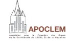

Étudiant passionné par le développement, l’administration système et la protection des données.
Découvrir mes projetsWordPress, Symfony, PHP, Python, JavaScript.
Certifié ANSSI, CNIL, Cisco. Sensibilisation à la protection des données.
Configuration serveur (Apache/XAMPP), gestion DNS, hébergement.